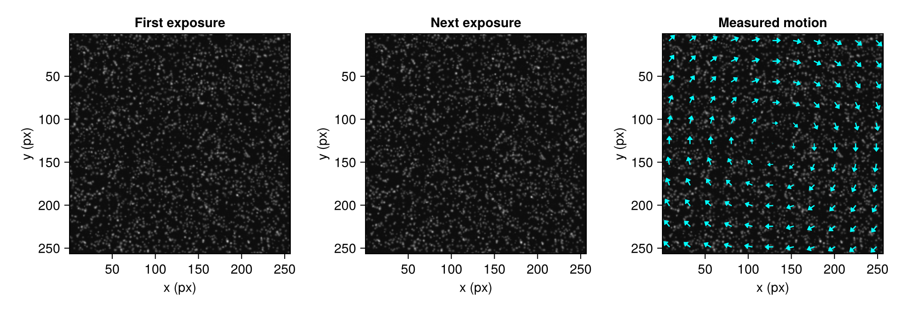
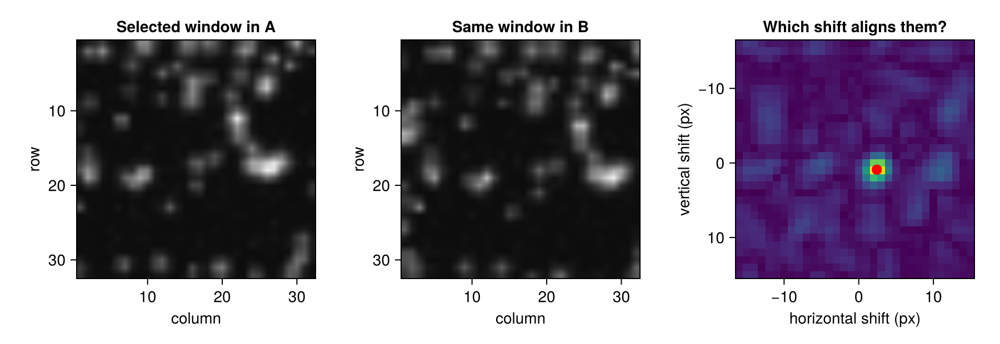
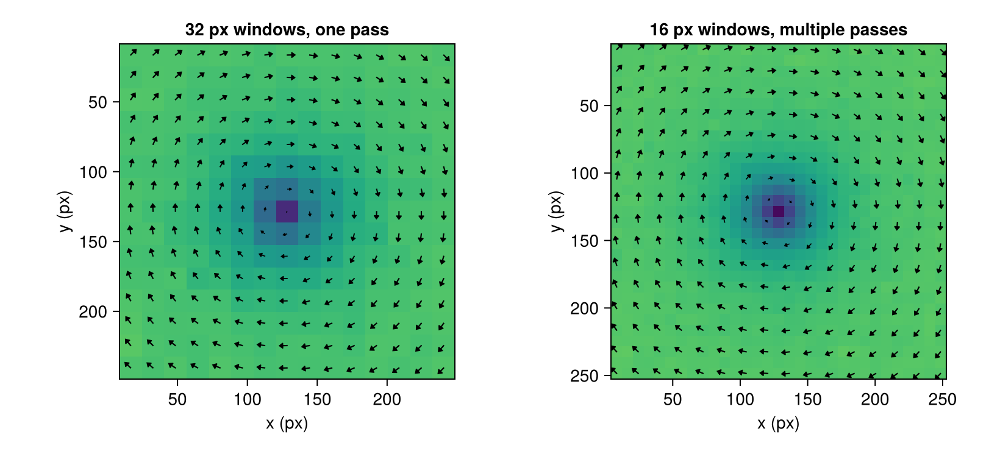
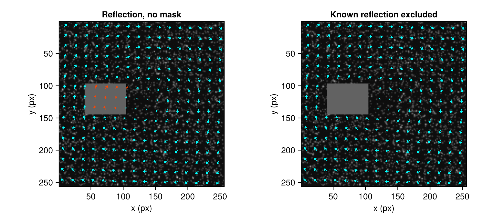

Your first vector field
A pair of particle images can look almost identical even when the fluid is swirling. By the end of this lesson, you will see that swirl as arrows, explain where one arrow comes from, and decide what to do with a reflection.
Run the blocks in order. You need Hammerhead and CairoMakie installed; the images are generated here, so no download is needed.
Turn two images into arrows
Make a 256 × 256 pixel particle pair with a smooth rotating flow. Each particle moves at most about three pixels between exposures.
using Hammerhead
using Hammerhead.SyntheticData
using Random
using CairoMakie
using Statistics: median
function flow(x, y, z, t)
dx, dy = x - 128.0, y - 128.0
rate = 3.0 / sqrt(dx^2 + dy^2 + 30.0^2)
return (-rate * dy, rate * dx, 0.0)
end
imgA, imgB, _, _ = generate_synthetic_piv_pair(
flow, (256, 256), 1.0;
particle_density = 0.05, background_noise = 0.03,
z_range = (-1.0, 1.0), rng = MersenneTwister(42),
)Begin with large windows, then refine to smaller ones. Each pass uses the previous field to align the images more closely. Here, the last two passes use 16 px windows; the repeated pass also allows an uncertainty estimate.
passes = multipass_parameters([64, 32, 16, 16];
padding = true, apodization = :gauss, uncertainty = true)
fine = run_piv(imgA, imgB, passes)
let
fig = Figure(size = (960, 330))
for (k, img, title) in ((1, imgA, "First exposure"),
(2, imgB, "Next exposure"),
(3, imgA, "Measured motion"))
ax = Axis(fig[1, k]; title, yreversed = true, aspect = DataAspect(),
xlabel = "x (px)", ylabel = "y (px)")
image!(ax, (0.5, 256.5), (0.5, 256.5), img'; colormap = :grays)
k == 3 && plot_vector_field!(ax, fine; stride = 3,
color = :cyan, lengthscale = 3)
end
fig
end
Read the arrow directions: motion above the center is mostly rightward; below it, mostly leftward. Arrow lengths are enlarged threefold in this plot. fine.u is horizontal displacement, positive right; fine.v is vertical displacement, positive down. Both are in pixels between these exposures.
Try it: reverse the sign of rate and rerun the image-generation and analysis blocks. Predict which arrows will reverse before looking.
Where does one arrow come from?
PIV follows a pattern of particles in a small window. It compares that pattern against possible shifts in the next image. The best alignment produces a peak in a correlation map.
Run a simple 32 px analysis and keep those maps so we can inspect one.
basic = run_piv(imgA, imgB,
PIVParameters(window_size = 32, overlap = 16,
keep_correlation_planes = true))
i, j = 5, 9
row0 = round(Int, basic.y[i] - 15.5)
col0 = round(Int, basic.x[j] - 15.5)
rows, cols = row0:(row0 + 31), col0:(col0 + 31)
windowA, windowB = @view(imgA[rows, cols]), @view(imgB[rows, cols])
probe = correlate(CrossCorrelator{Float64}((32, 32)), windowA, windowB)
plane = basic.correlation_planes[i, j]
zero_lag = size(plane) .÷ 2 .+ 1
let
fig = Figure(size = (900, 310))
for (k, win, title) in ((1, windowA, "Selected window in A"),
(2, windowB, "Same window in B"))
ax = Axis(fig[1, k]; title, yreversed = true, aspect = DataAspect(),
xlabel = "column", ylabel = "row")
image!(ax, (0.5, 32.5), (0.5, 32.5), win'; colormap = :grays)
end
ax = Axis(fig[1, 3]; title = "Which shift aligns them?",
xlabel = "horizontal shift (px)", ylabel = "vertical shift (px)",
yreversed = true, aspect = DataAspect())
heatmap!(ax, (1:size(plane, 2)) .- zero_lag[2],
(1:size(plane, 1)) .- zero_lag[1], plane'; colormap = :viridis)
scatter!(ax, [probe.du], [probe.dv]; color = :red, markersize = 13)
fig
end
The red point marks the estimated shift. Fitting around the brightest sampled peak places it between pixels, so a displacement can be fractional.
(window_center = (basic.x[j], basic.y[i]),
displacement_px = (basic.u[i, j], basic.v[i, j]),
integer_peak = probe.peakloc,
subpixel_peak = probe.refined_peakloc)(window_center = (144.5, 80.5), displacement_px = (2.4262797616740244, 0.8946721973570142), integer_peak = (18, 19), subpixel_peak = (17.894672197357014, 19.426279761674024))Try it: choose another i, j and rerun this section. A window across the vortex center contains different motion directions; how does its correlation map differ? Retaining every map is useful here, but consumes memory on large recordings.
More arrows, or more detail?
Compare the simple field with the refined one using the same colors and arrow scaling. The backgrounds show displacement magnitude in pixels.
let
fig = Figure(size = (820, 370))
for (k, r, title) in ((1, basic, "32 px windows, one pass"),
(2, fine, "16 px windows, multiple passes"))
ax = Axis(fig[1, k]; title, yreversed = true, aspect = DataAspect(),
xlabel = "x (px)", ylabel = "y (px)")
heatmap!(ax, r.x, r.y, hypot.(r.u, r.v)';
colorrange = (0, 4), colormap = :viridis)
plot_vector_field!(ax, r; stride = k == 1 ? 1 : 2, lengthscale = 2)
end
fig
end
Smaller windows reveal more variation near the center, but use fewer particles per measurement. Overlap places arrows closer together; it does not shrink the particle-sampling window.
Try it: change the last two window sizes to 32 and rerun. Look at the vortex center and the spacing of the reported vectors, not just the number of arrows.
A reflection can look like motion
Add a bright rectangle that stays fixed in both images. It hides moving particles and may attract a zero-shift correlation peak. First process it without a mask, then tell PIV where the reflection is.
imgA_refl, imgB_refl = copy(imgA), copy(imgB)
for img in (imgA_refl, imgB_refl)
img[97:144, 41:104] .= 1.0
end
with_reflection = run_piv(imgA_refl, imgB_refl, passes)
mask = falses(size(imgA))
mask[97:144, 41:104] .= true # true means excluded
masked = run_piv(imgA_refl, imgB_refl, passes; mask)
let
fig = Figure(size = (820, 370))
for (k, r, title) in ((1, with_reflection, "Reflection, no mask"),
(2, masked, "Known reflection excluded"))
ax = Axis(fig[1, k]; title, yreversed = true, aspect = DataAspect(),
xlabel = "x (px)", ylabel = "y (px)")
image!(ax, (0.5, 256.5), (0.5, 256.5), imgA_refl'; colormap = :grays)
plot_vector_field!(ax, r; stride = 2, color = :cyan,
replaced_color = :orangered, lengthscale = 2)
end
fig
end
Orange arrows carry an outlier flag. Their values can include replacements, which are neighborhood estimates rather than new particle measurements. In the masked result, windows with enough excluded pixels have no vector. Check both flags when summarizing measured displacements.
accepted = .!(masked.mask .| masked.outliers) .&
isfinite.(masked.u) .& isfinite.(masked.v)
(accepted_vectors = count(accepted),
excluded_windows = count(masked.mask),
flagged_vectors = count(masked.outliers))(accepted_vectors = 900, excluded_windows = 59, flagged_vectors = 2)Try it: make the mask rectangle too small. Can a partly covered window still produce a plausible-looking arrow? A field's appearance alone cannot tell you whether every vector is a sound measurement.
From pixels to velocity
Suppose a calibration gives 0.02 mm per pixel, and the exposure delay is 0.001 s. A two-pixel displacement then means 40 mm/s. These are example calibration values; use measured values for your setup.
scale = PhysicalScale(pixel_size = 0.02, dt = 0.001,
length_unit = "mm", time_unit = "s")
velocity = physical(with_scale(fine, scale))
fine_i = argmin(abs.(fine.y .- basic.y[i]))
fine_j = argmin(abs.(fine.x .- basic.x[j]))
(displacement_px = fine.u[fine_i, fine_j],
velocity_mm_per_s = velocity.u[fine_i, fine_j],
position_mm = velocity.x[fine_j])(displacement_px = 2.489929147662054, velocity_mm_per_s = 49.79858295324108, position_mm = 2.89)fine still holds pixels. velocity holds positions in mm and components in mm/s. The same conversion scales the uncertainty estimate.
valid = .!(fine.mask .| fine.outliers)
sigma_u = filter(isfinite, fine.uncertainty_u[valid])
median(sigma_u)0.017531513650488745This last number estimates random displacement uncertainty in pixels (Wieneke, 2015), not calibration error or proof of accuracy. The uncertainty guide explains its limits.
You have now made a field, traced one vector to its particle pattern, removed a known obstruction and converted its units. Next, try a real wind-tunnel recording, where the true motion is unknown and the particles themselves reveal where to be cautious.
This page was generated using Literate.jl.